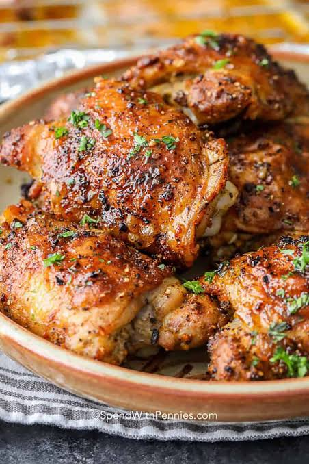

Tender chicken pieces rolled in savory parmesan garlic potato flakes and oven-baked in rich melted butter for a perfectly golden, crunch-heavy crust.

Prep Time
Cook Time
Servings
15 mins
45 mins
4 people
Calorie & Nutrient Breakdown (Per Serving)
Calories
Protein
Carbs
Fats
460 kcal
42g
18g
24g
Nutritional Highlights
*High-Yield Muscle Fuel
Provides 42 grams of powerful complete protein per serving from 3 lbs of whole chicken to optimize metabolic rates and muscle retention.
*Crispy Potato Glycogen Recovery
Instant potato flakes serve as an innovative, gluten-free crunch coating that delivers fast-absorbing carbohydrates to recover your daily physical energy levels.
*Parmesan Amino Framework
A savory dusting of aged parmesan cheese adds essential trace minerals like calcium and sodium to help maintain ideal electrolyte balances.
Ingredients
3 lbs chicken, cut up into pieces
1 egg
2 tbsp milk
1 cup instant potato flakes
1 tsp garlic salt
1/4 cup parmesan cheese
1/4 cup butter
Pinch of spring onion (for garnish)
Instructions
Preheat your oven to 400°F (204°C).
In a medium bowl, beat the egg and 2 tablespoons of milk together until fully blended.
In a separate shallow bowl, mix together the instant potato flakes, garlic salt, and parmesan cheese until uniform.
Melt your 1/4 cup of butter directly in a shallow baking pan.
Roll each piece of cut chicken thoroughly in the egg mixture first, then dread it carefully through the seasoned potato flakes until heavily coated.
Arrange the coated chicken pieces evenly inside the pan with the melted butter.
Bake for 45 minutes, or until the chicken crust is entirely crispy and golden, and the juices run completely clear when pierced.
Transfer the hot chicken to a serving platter, garnish with a pinch of fresh spring onion, and serve hot!